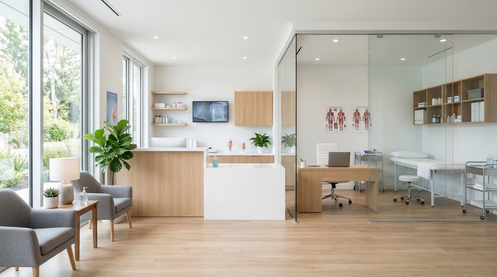

循環器検査
12誘導心電図、ホルター心電図、心臓超音波検査を症状や健診結果に応じてご案内します。
内科・循環器内科
生活習慣病の長期フォローと急な体調不良のどちらにも対応できるよう、院内検査体制と丁寧な説明を重視しています。初診の方にも通院中の方にも、診療の見通しが伝わる医療を目指しています。
院長紹介
総合内科専門医 / 循環器専門医
大学病院と地域中核病院で循環器診療に携わった後、健診後の再検査や高血圧・脂質異常症の継続管理をより身近に行える場として当院を開設しました。症状が落ち着いている方にも、治療が必要か迷っている方にも、検査結果の意味と次の一手を丁寧に説明することを大切にしています。
高血圧、不整脈、胸痛評価、健診異常の二次精査
検査だけで終わらせず、生活背景や通院しやすさも踏まえて方針を提案します
専門治療が必要な場合は、近隣の総合病院・大学病院へ速やかに紹介します
12誘導心電図、ホルター心電図、心臓超音波検査を症状や健診結果に応じてご案内します。
採血や検査説明、継続通院の相談まで、看護師と受付スタッフが連携して対応します。

発熱症状の方は時間帯を分けてご案内し、換気・消毒・導線分離を徹底しています。
精密検査や入院が必要な際は、近隣の総合病院や大学病院と連携して対応します。
診療方針
体調不良の受診窓口であると同時に、健診後の不安や薬の継続方針を相談しやすい医院であることを大切にしています。